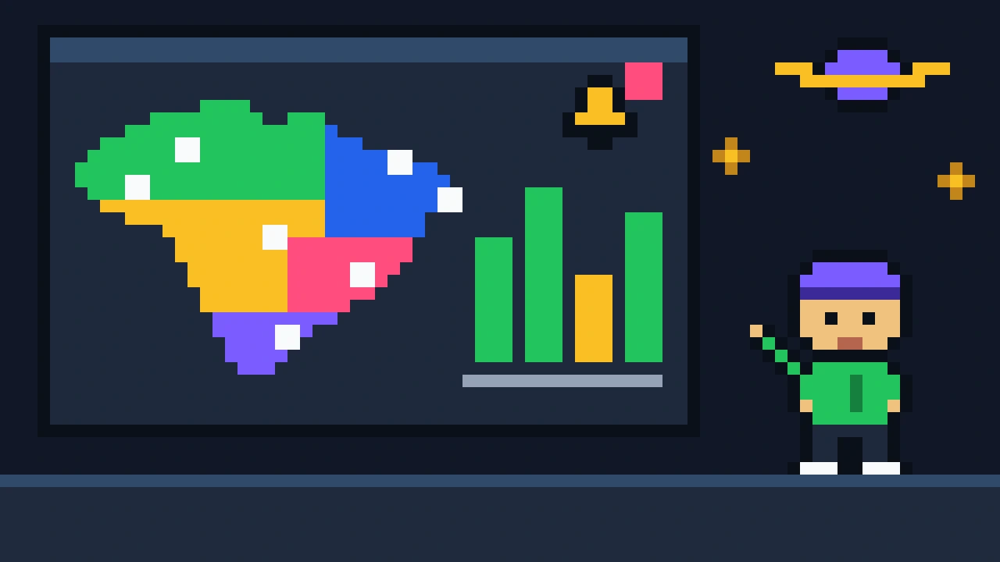
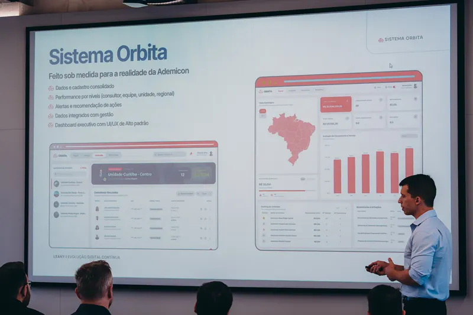

Ademicon Orbita
Orbita, a CRM that turns a nationwide network's dispersed data into institutional memory, proactive alerts and operational decisions.

Challenge
Ademicon's network of units, points of sale and consultants lived in spreadsheets, WhatsApp threads, emails and managers' memory. History vanished whenever a manager changed.
Risks only surfaced after a complaint or an audit. The product had to help teams spot signals before they became incidents.
Solution
Building on Leany's discovery, I made the person's taxpayer ID (CPF) the central entity, consolidating every link, company and point of sale in a single view.
Orbita has nine modules, from a dashboard with a natural-language summary, KPIs and an alert center, to an accreditation Kanban, a visit logbook, reports, an access matrix and relationship maps.
Impact
With an agentic design harness, a chain of AI agents with explicit roles where I supervised every handoff, the MVP went from discovery to a working React app in five days.
Approved by the client and contracted for development. In 2026, Orbita won the Innova Ademicon Open Innovation call.
